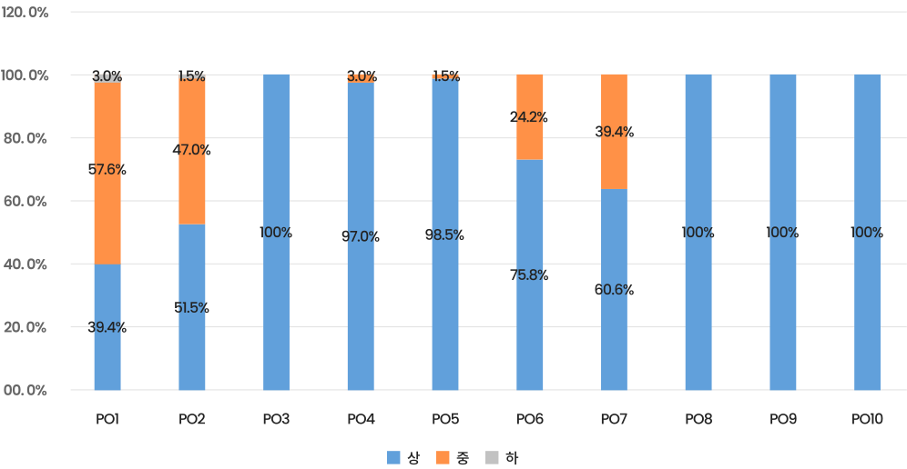

프로그램학습성과 결과
2020년도 졸업학년 프로그램 학습성과 평가결과
우리 배재대학교 간호학과는 2021년 2월 2일 졸업예정자 66명을 대상으로 프로그램 학습성과(Program Outcome) 달성정도를 평가하기 위한 평가회를 개최하였습니다. 프로그램 학습성과란 우리 학과의 교육목표와 연계된 간호교육프로그램을 이수한 학생이 졸업시점에 갖추어야 할 능력과 자질로서 그 결과를 다음과 같이 공지합니다.
| 프로그램 학습성과 | 평가결과 | ||||
|---|---|---|---|---|---|
| 성취 수준 |
N(명) | % | 중 이상 (%) |
달성 목표 |
|
| PO1. 다양한 교양지식과 전공지식에 근거한 간호술을 통합적으로 실무에 적용한다. | 상 | 26 | 39.4% | 97.0% | 달성 |
| 중 | 38 | 57.6% | |||
| 하 | 2 | 3.0% | |||
| PO2. 대상자의 간호상황에 따른 핵심기본간호술을 선택하여 실행한다. | 상 | 34 | 51.5% | 98.5% | 달성 |
| 중 | 31 | 47.0% | |||
| 하 | 1 | 1.5% | |||
| PO3. 언어적, 비언어적 상호작용을 통한 치료적 의사소통술을 적용한다. | 상 | 66 | 100% | 100% | 달성 |
| 중 | 0 | 0 | |||
| 하 | 0 | 0 | |||
| PO4. 대상자의 건강문제 해결을 위한 전문분야 간 협력과 업무조정 역할의 중요성을 설명한다. | 상 | 64 | 97.0% | 100% | 달성 |
| 중 | 2 | 3.0% | |||
| 하 | 0 | 0 | |||
| PO5. 비판적 사고에 근거한 간호과정을 적용하고 임상적 추론을 실행한다. | 상 | 65 | 98.5% | 100% | 달성 |
| 중 | 1 | 1.5% | |||
| 하 | 0 | 0 | |||
| PO6. 간호전문직 표준을 이해하고 확인한다. | 상 | 50 | 75.8% | 100% | 달성 |
| 중 | 16 | 24.2% | |||
| 하 | 0 | 0 | |||
| PO7. 기독교 정신의 바탕 하에 간호실무의 법적, 윤리적 기준을 이해하고 간호실무에 통합한다. | 상 | 40 | 60.6% | 100% | 달성 |
| 중 | 26 | 39.4% | |||
| 하 | 0 | 0 | |||
| PO8. 리더십의 기본원리를 알고 간호팀 내 리더십을 발휘한다. | 상 | 66 | 100.0% | 100% | 달성 |
| 중 | 0 | 0 | |||
| 하 | 0 | 0 | |||
| PO9. 간호연구를 통한 간호지식체의 중요성을 인식하고 연구를 기획한다. | 상 | 66 | 100.0% | 100% | 달성 |
| 중 | 0 | 0 | |||
| 하 | 0 | 0 | |||
| PO10. 국내외 보건의료 정책변화를 인지한다. | 상 | 66 | 100% | 100% | 달성 |
| 중 | 0 | 0 | |||
| 하 | 0 | 0 | |||
우리학과는 10개의 PO별 평가에서 모두 ‘중’ 이상이 70% 이상이었으므로 모든 학습성과가 달성되었음. 향후 다양한 의견수렴을 통해 지속적으로 개선함으로써 전문적 간호인재를 양성해 나갈 예정임.
